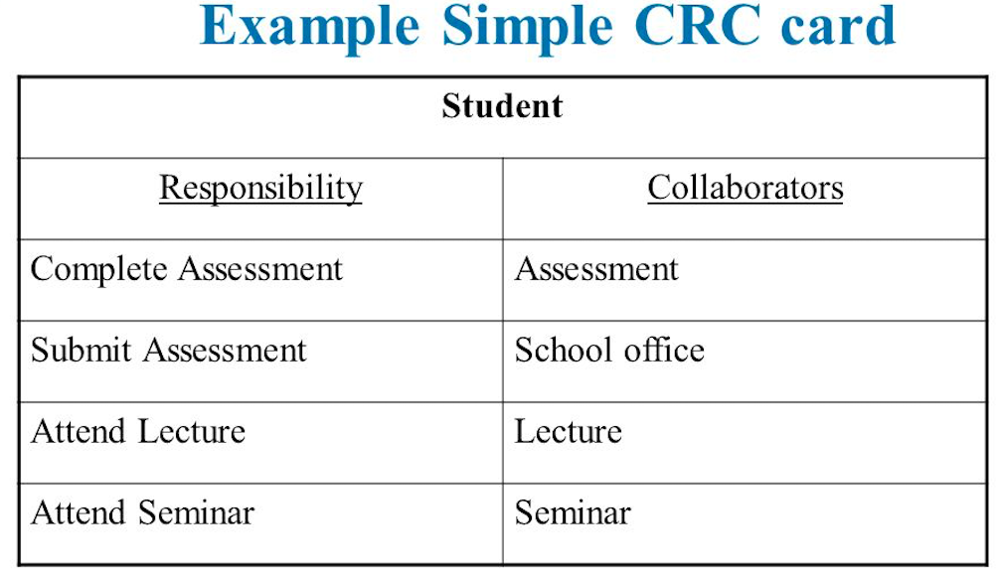

Object Oriented Metrics Calculator
Coupling Between Objects
The Coupling Between Objects Metric will help you determine class complexity in terms of how many other classes each class collaborates with. This metric is related to the Response for a Class Metric. Simply determine for each attribute and method in your classes which classes that attribute or method collaborates with. Select "Yes" in the dropdown boxes for collaborator classes, and let our calculator do the rest. In order to determine which classes collaborate, feel free to use Class Responsibility Collaborator Cards (CRC Cards, an example shown below). For the methods, you can also just check in your Response for a Class tables which classes the called methods are from. The Coupling Between Objects metric for a class is the number of unique collaborators for that class.
| CBO Table |
|---|